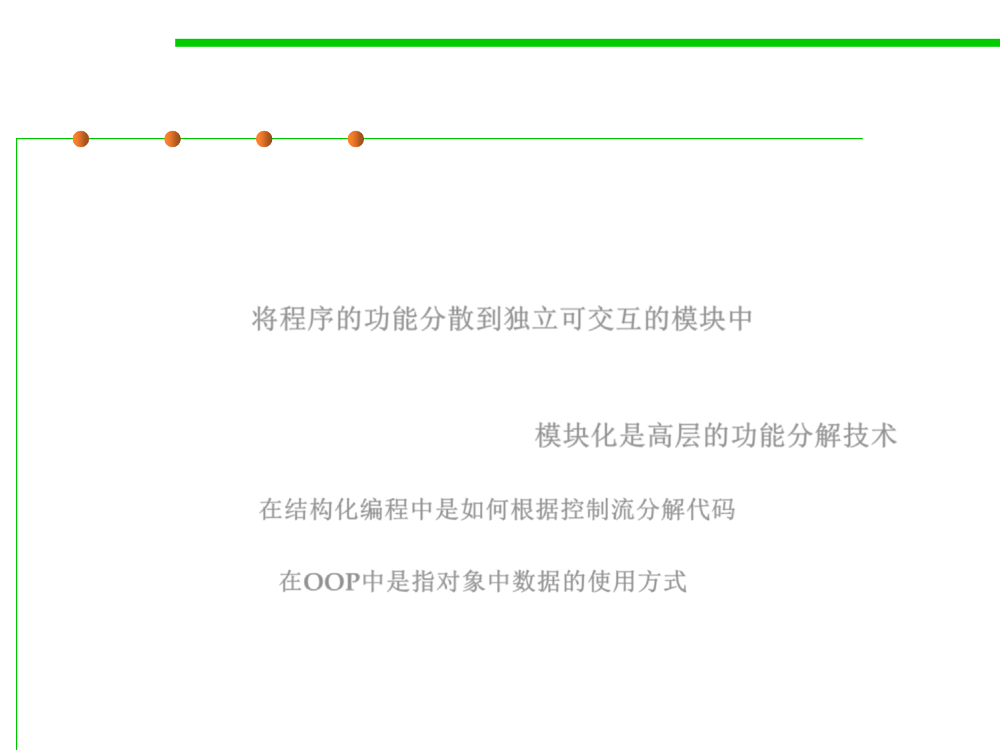

6.1 Metrics and Construction Principles for Maintainability
Modular programming
▪ Modular programming is a software design technique that
emphasizes separating the functionality of a program into
independent, interchangeable modules, such that each contains
everything necessary to execute only one aspect of the desired
functionality. 将程序的功能分散到独立可交互的模块中
▪ It usually refers to high-level decomposition of the code of an
entire program into pieces, and has been widely adopted in both
Structured Programming and OOP. 模块化是高层的功能分解技术
– Structured programming refers to the low-level code use of structured
control flow; 在结构化编程中是如何根据控制流分解代码
– Object-oriented programming refers to the data use of objects, a kind of
data structure. 在OOP中是指对象中数据的使用方式